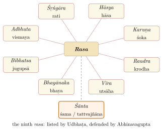

Chapter 6: Alaṅkāraśāstra: The Indian Theory of Literature¶
kāvyasyātmā dhvanir iti budhair yaḥ samāmnātapūrvas
tasyābhāvaṃ jagadur apare bhāktam āhus tam anye |
kecid vācāṃ sthitam aviṣaye tattvam ūcus tadīyaṃ
tena brūmaḥ sahṛdayamanaḥprītaye tatsvarūpam ||
The wise have long held that the soul of poetry is suggestion (dhvani). Some have denied that it exists; others have called it a secondary meaning; some have said its nature lies beyond the reach of words. We shall therefore explain its nature, for the delight of the hearts of sensitive readers.
— Ānandavardhana, Dhvanyāloka 1.1
6.1 Introduction¶
Sanskrit possesses one of the longest continuous traditions of literary theory in the world. It is called alaṅkāraśāstra, “the science of ornament”, after its early concern with figures of speech, and also sāhityaśāstra, “the science of literature”. Its texts range from the chapters on poetics in Bharata’s Nāṭyaśāstra to Jagannātha’s Rasagaṅgādhara in the seventeenth century. A recurring question, especially from the ninth century onwards, was: what is the “soul” (ātman) of poetry — the element without which there is no poetry at all? Different writers answered: figuration, style, suggestion, oblique expression, propriety, rasa. Later historians organised these answers into “schools”, although the authors themselves did not always see their work in those terms. The standard histories are De (1960) and Gerow (1977); Pollock (2016) translates the central texts on rasa. The major theorists are listed in Table 6.1.
| Theorist | Date | Work | Principal contribution |
|---|---|---|---|
| Bharata (attrib.) | c. 200 BCE–200 CE | Nāṭyaśāstra | Rasa theory for the theatre; first lists of figures, qualities and faults |
| Bhāmaha | c. 6th–7th c. | Kāvyālaṅkāra | Figuration (alaṅkāra) grounded in “oblique” expression |
| Daṇḍin | c. 700 | Kāvyādarśa | Figures; the two “ways” (mārga); the ten qualities (guṇa) |
| Vāmana | c. 800 | Kāvyālaṅkārasūtravṛtti | Style (rīti) as the soul of poetry |
| Udbhaṭa, Rudraṭa | c. 800–900 | Kāvyālaṅkārasārasaṅgraha, Kāvyālaṅkāra | Refinement of figures; Udbhaṭa lists nine rasas |
| Ānandavardhana | mid-9th c. | Dhvanyāloka | Suggestion (dhvani) as the soul of poetry |
| Rājaśekhara | early 10th c. | Kāvyamīmāṃsā | The poet’s training and craft |
| Kuntaka | c. 1000 | Vakroktijīvita | Oblique expression (vakrokti) |
| Abhinavagupta | c. 950–1016 | Abhinavabhāratī, Locana | Synthesis of rasa and dhvani; śānta rasa |
| Mahimabhaṭṭa | 11th c. | Vyaktiviveka | Critique of dhvani: suggestion as inference |
| Bhoja | 11th c. | Śṛṅgāraprakāśa | The erotic as the one fundamental rasa |
| Kṣemendra | 11th c. | Aucityavicāracarcā | Propriety (aucitya) |
| Mammaṭa | c. 1100 | Kāvyaprakāśa | Standard synthesis, accepting dhvani |
| Ruyyaka | 12th c. | Alaṅkārasarvasva | Systematic treatment of figures |
| Viśvanātha | 14th c. | Sāhityadarpaṇa | Poetry as “a sentence whose soul is rasa” |
| Rūpa Gosvāmin | 16th c. | Bhaktirasāmṛtasindhu | Devotion (bhakti) as the supreme rasa |
| Appayya Dīkṣita | 16th c. | Kuvalayānanda, Citramīmāṃsā | Figures |
| Jagannātha | 17th c. | Rasagaṅgādhara | Last major synthesis; independent critique |
6.2 Rasa: Bharata and the Theatre¶
6.2.1 The Rasa Sūtra¶
The sixth chapter of the Nāṭyaśāstra defines rasa (literally “juice”, “flavour”, “taste”) in a single prose sentence, the most discussed sentence in Indian aesthetics:
Nāṭyaśāstra 6, prose after verse 31 (Ghosh’s numbering)
vibhāvānubhāvavyabhicārisaṃyogād rasaniṣpattiḥ
Rasa arises from the combination of the determinants, the consequents and the transitory states.
The determinants (vibhāva) are the causes of an emotion: its object or “support” (ālambana), for example the beloved, and the circumstances that excite it (uddīpana), such as moonlight or spring. The consequents (anubhāva) are its outward signs — glances, gestures, words. The transitory states (vyabhicāribhāva), thirty-three in Bharata’s list, are passing feelings such as anxiety, joy, shame, envy, fatigue and doubt that accompany and colour the dominant emotion. In addition Bharata lists eight involuntary “states of the spirit” (sāttvikabhāva): paralysis, perspiration, horripilation, change of voice, trembling, change of colour, tears and fainting.
Each rasa corresponds to a “stable” emotion (sthāyibhāva); Bharata names eight (Figure 6.1). He also gives each a colour and a presiding deity. These correspondences matter chiefly for performance and are tabulated in Volume 9, Saṅgīta–Nāṭya (Chapter 3). For the reader of poetry the more useful question is where each rasa is found. Table 6.2 gives illustrations from works discussed in this volume.

6.2.2 The Rasa Debate¶
What does it mean to say that rasa “arises”? Where is it located — in the character, the actor or the spectator? Four answers, known mainly through Abhinavagupta’s report in his commentary on the Nāṭyaśāstra, the Abhinavabhāratī, shaped the later tradition (Pollock 2016):
-
Bhaṭṭa Lollaṭa (eighth–ninth century) held that rasa is the stable emotion of the original character (Rāma, say), intensified by the determinants and the rest, and attributed to the actor who imitates him. Rasa is “produced” (utpatti).
-
Śrī Śaṅkuka argued that the spectator infers the emotion from the signs presented by the actor, as one recognises a picture of a horse as a horse; rasa is an imitated emotion apprehended by inference (anumiti).
-
Bhaṭṭa Nāyaka (ninth–tenth century) objected that neither the character’s emotion nor an inference about it could account for aesthetic pleasure. He proposed that poetic language has, besides denotation, two further powers: one that “generalises” the content, freeing it from personal reference (bhāvakatva), and one that leads the spectator to “enjoy” it (bhojakatva).
-
Abhinavagupta accepted the generalisation (sādhāraṇīkaraṇa) but rejected the special powers, explaining rasa as the suggestion (dhvani) of an emotion that the spectator “tastes” (āsvāda, carvaṇā) through the awakening of latent impressions (vāsanā) in his own mind. Rasa is manifested (abhivyakti), not produced, and exists only in the experience of the responsive spectator.
Abhinavagupta also discussed the obstacles that prevent aesthetic experience — among them lack of plausibility, absorption in one’s own pleasure or pain, inadequate means of presentation, and doubt — and described the experience itself as a wonder (camatkāra) akin to, but not identical with, the bliss of spiritual realisation.
6.2.3 Śānta and the Number of Rasas¶
Whether there is a ninth rasa, the tranquil (śānta), was one of the great disputes of Indian aesthetics. Udbhaṭa (c. 800) is the earliest theorist known to list nine; some manuscripts of the Nāṭyaśāstra include a passage on śānta that is probably a later addition. Opponents objected that tranquillity, the cessation of emotion, cannot be represented on the stage. Abhinavagupta defended śānta at length, identifying its stable emotion as the knowledge of truth (tattvajñāna) and treating it as the rasa into which all others ultimately resolve (Masson and Patwardhan 1969). Later theorists added others: the affection of parents for children (vātsalya) and, in the Gauḍīya Vaiṣṇava tradition of Rūpa Gosvāmin, devotion (bhakti) as the highest rasa. V. Raghavan’s The Number of Rasas traces these debates (Raghavan 1940).
6.2.4 The Heroine and Her Situations¶
Much of the practical analysis of love poetry rested on the classification of heroines (nāyikā), first set out in the Nāṭyaśāstra and elaborated by later writers. The best-known scheme describes eight situations in which a heroine may be found (aṣṭanāyikā; Table 6.3).
| Heroine | Situation |
|---|---|
| Vāsakasajjā | Dressed and waiting, the chamber prepared, for her lover’s arrival |
| Virahotkaṇṭhitā | Distressed because her lover is late |
| Svādhīnabhartṛkā | Whose lover is devoted and at her side |
| Kalahāntaritā | Separated by a quarrel she herself provoked, and now repentant |
| Khaṇḍitā | Angry with a lover who arrives bearing the marks of another woman |
| Vipralabdhā | Deceived, having gone to the tryst where her lover does not come |
| Proṣitabhartṛkā | Whose husband is away on a journey |
| Abhisārikā | Going out to meet her lover, braving darkness, storm or moonlight |
These types, and the corresponding classifications of heroes and of messengers and confidantes, gave poets, painters and dancers a shared repertoire of situations. The Hindi rīti poets wrote whole treatises illustrating them, the Pahari painters depicted them, and they remain the basis of expressive dance (abhinaya) in Bharatanāṭyam, Kathak and Odissi. Modern readers have noted that the scheme defines women almost entirely in relation to a male lover, a limitation of the courtly world from which it came.
6.3 Alaṅkāra: Bhāmaha and Daṇḍin¶
The earliest surviving independent works on poetics, Bhāmaha’s Kāvyālaṅkāra and Daṇḍin’s Kāvyādarśa, are largely devoted to figures of speech (alaṅkāra). Bhāmaha held that what makes language poetic is a certain “crookedness” or obliquity (vakrokti), a departure from ordinary statement, which underlies all figures:
Bhāmaha, Kāvyālaṅkāra 2.85
saiṣā sarvaiva vakroktir anayārtho vibhāvyate |
yatno ’syāṃ kavinā kāryaḥ ko ’laṅkāro ’nayā vinā ||
All this is oblique expression; through it meaning is made to shine. The poet should strive for it: what figure is there without it?
Daṇḍin divided the poetic manner into two “ways” (mārga), the Vaidarbha (of Vidarbha, in the Deccan) and the Gauḍa (of Bengal). He identified ten qualities (guṇa) as the “life” of the Vaidarbha way, which the Gauḍa way often reverses (Table 6.4), and classified a large number of figures with examples.
| Guṇa | Translation | Description |
|---|---|---|
| Śleṣa | Compactness | Close-knit sound, avoiding loose syllables |
| Prasāda | Clarity | Meaning easily understood |
| Samatā | Evenness | Consistency of sound texture |
| Mādhurya | Sweetness | Presence of rasa; pleasing repetition of sounds |
| Sukumāratā | Softness | Avoidance of harsh syllables |
| Arthavyakti | Explicitness | Meaning complete without strain |
| Udāratva | Elevation | Suggestion of some excellence |
| Ojas | Vigour | Abundance of compounds |
| Kānti | Loveliness | Conformity to common experience; avoidance of the far-fetched |
| Samādhi | Transference | Attribution of the qualities of one thing to another |
Vāmana later distinguished ten qualities of sound and ten of sense bearing the same names, while Ānandavardhana and Mammaṭa reduced the qualities to three — sweetness (mādhurya), vigour (ojas) and clarity (prasāda) — understood as properties of rasa rather than of words.
6.3.1 Figures of Speech¶
The number of recognised figures grew from about forty in Bhāmaha and Daṇḍin to over a hundred in Appayya Dīkṣita’s Kuvalayānanda. Figures were divided into figures of sound (śabdālaṅkāra) and figures of sense (arthālaṅkāra), with some writers recognising mixed figures. Edwin Gerow’s Glossary of Indian Figures of Speech is the standard reference (Gerow 1971). Table 6.5 lists some of the principal figures.
| Figure | Approximate equivalent | Description |
|---|---|---|
| Anuprāsa | Alliteration | Repetition of consonants |
| Yamaka | “Twinning” | Repetition of a syllable-sequence with different meanings |
| Śleṣa | Paronomasia | Words bearing two meanings at once |
| Upamā | Simile | Explicit comparison of subject and standard |
| Rūpaka | Metaphor | Identification of subject with standard |
| Utprekṣā | Poetic fancy | Imagining the subject to be something else (“as if”) |
| Atiśayokti | Hyperbole | Statement exceeding the actual |
| Arthāntaranyāsa | Corroboration | A particular statement supported by a general truth, or vice versa |
| Vyatireka | Contrast | The subject shown as superior to the standard |
| Vibhāvanā | Peculiar causation | An effect described without its usual cause |
| Viśeṣokti | Peculiar allegation | A cause present but its usual effect absent |
| Svabhāvokti | Natural description | Vivid description of a thing as it is (its status as a figure was disputed) |
6.3.2 Faults¶
The theory of faults (doṣa) was as detailed as that of qualities. Mammaṭa (Kāvyaprakāśa, chapter 7) classifies faults of words (pada), of sentences (vākya), of meaning (artha) and of rasa. Faults of words include harshness of sound (śrutikaṭu), grammatical incorrectness (cyutasaṃskṛti) and the use of words not used by poets (aprayukta); faults of sentence include ambiguity and faulty construction; faults of rasa include naming an emotion directly instead of evoking it, and dwelling on a subsidiary element at the expense of the main one. A fault can, in some contexts, become a merit — harsh sounds, for instance, suit the furious rasa.
6.4 Rīti: Vāmana¶
Vāmana (c. 800), probably a minister of King Jayāpīḍa of Kashmir, wrote his Kāvyālaṅkārasūtravṛtti in aphorisms with his own commentary. He declared that “style is the soul of poetry” (rītir ātmā kāvyasya, 1.2.6), defining style as “a particular arrangement of words” (viśiṣṭā padaracanā rītiḥ, 1.2.7) whose particularity consists in the qualities. He recognised three styles: the Vaidarbhī, possessing all the qualities and the best; the Gauḍī, marked by vigour and long compounds; and the Pāñcālī, marked by sweetness and softness.
6.5 Dhvani: Ānandavardhana¶
The Dhvanyāloka (“Light on Suggestion”) of Ānandavardhana, a Kashmiri writer at the court of Avantivarman (r. 855–883), transformed Sanskrit poetics. Earlier theory had analysed poetry largely in terms of its expressed content and its ornaments. Ānandavardhana argued that in the best poetry the most important meaning is not expressed at all but suggested.
6.5.1 The Three Powers of Words¶
Indian philosophers of language recognised two ways in which words convey meaning. Denotation (abhidhā) conveys the conventional meaning. Indication (lakṣaṇā) operates when the denoted meaning is impossible in context: in the stock example gaṅgāyāṃ ghoṣaḥ, “a cowherd village on the Ganges”, a village cannot literally be on the river, so the expression indicates “on the bank of the Ganges”. Ānandavardhana added a third power, suggestion (vyañjanā), which conveys a further meaning without the literal meaning being blocked. In the indication example, the speaker’s choice of words also suggests the coolness and purity of the village. Similarly, the sentence “The sun has set” may suggest, according to the speaker and situation, that it is time to stop work, to bring in the cattle, or for a lover to come.
Ānandavardhana, Dhvanyāloka 1.13
yatrārthaḥ śabdo vā tam artham upasarjanīkṛtasvārthau |
vyaṅktaḥ kāvyaviśeṣaḥ sa dhvanir iti sūribhiḥ kathitaḥ ||
That kind of poetry in which the meaning, or the word, subordinating its own (literal) sense, suggests that (other) meaning, is called dhvani by the wise.
6.5.2 A Classic Example¶
Ānandavardhana’s first illustration of suggestion is a Prakrit stanza, also found in Hāla’s anthology (Section 5.4), in which the suggested meaning is the opposite of what is said:
Quoted in Dhvanyāloka 1.4, vṛtti
bhama dhammia vīsattho so suṇao ajja mārio deṇa |
golāṇaīkacchakuḍaṅgavāsiṇā dariasīheṇa ||
Wander freely now, pious sir: that dog was killed today by the fierce lion that lives in the thickets on the bank of the Godā.
On its face the sentence is an invitation: the dog that troubled the pious man while he gathered flowers is dead, so he may walk about without fear. But a woman who uses the riverside thicket as a meeting-place with her lover says it, and what she suggests is a prohibition: if a dog frightened you, a lion will do worse — keep away. Nothing in the words expresses the prohibition; it is conveyed by the speaker, the situation and the implications of “lion”. For Ānandavardhana the example shows that a suggested meaning can differ in kind from the expressed one and cannot be reduced to denotation or indication.
6.5.3 Rasa Analysed: An Illustration¶
The theorists analysed scenes in terms of the components of rasa. In the departure scene of the Abhijñānaśākuntala (Chapter 3), for example, the stable emotion is the affection and grief of parting. Śakuntalā and her impending absence are the “support” (ālambana); the forest, the trees and the fawn that she has tended are “exciting” determinants (uddīpana); Kaṇva’s choked voice and tear-dimmed eyes are consequents (anubhāva) and involuntary states (sāttvika); and anxiety, recollection and dejection are transitory states (vyabhicārin). The spectator, according to Abhinavagupta, does not grieve for a particular old man in a particular forest but tastes the generalised experience of parting from a beloved child — and finds in that tasting a kind of delight. This kind of analysis, applied verse by verse, was the staple of commentaries and of teaching.
6.5.4 Kinds of Suggested Meaning¶
What is suggested may be a fact or idea (vastu), a figure of speech (alaṅkāra), or an emotion (rasa, together with related states). Since an emotion can never be conveyed by naming it — to say “she was in love” does not evoke love — rasa can only be suggested, and rasa-dhvani is the highest form of poetry. Ānandavardhana graded poetry in three classes: poetry in which suggestion predominates (dhvani); poetry in which a suggested meaning is present but subordinate to the expressed (guṇībhūtavyaṅgya); and “picture poetry” (citra), which relies on verbal or ornamental effects with little suggestion.
The theory was not accepted without resistance (see below), but Abhinavagupta’s commentary on the Dhvanyāloka, the Locana, and Mammaṭa’s Kāvyaprakāśa established the dhvani theory as orthodoxy. The Dhvanyāloka with the Locana is available in a fine annotated translation by Ingalls, Masson and Patwardhan (Ingalls et al. 1990).
6.5.5 The Critics of Dhvani¶
The opponents whom Ānandavardhana anticipates in his opening verse were real, and the debate continued for two centuries. Some held that what he called suggestion was simply a form of indication (lakṣaṇā); others, following the Mīmāṃsā philosophers, that the “purport” of a sentence (tātparya) could extend as far as needed to cover any implied meaning; Bhaṭṭa Nāyaka argued that rasa is not suggested but “enjoyed” through special powers of poetic language; and Mahimabhaṭṭa, in the Vyaktiviveka (eleventh century), set out to show that every case of suggestion is an inference from the expressed meaning, and appended a long analysis of faults in Kālidāsa and other poets. Abhinavagupta and Mammaṭa answered these objections in detail, and the controversy sharpened the analysis of meaning on all sides. It is one of the best examples of the way Indian intellectual traditions advanced through sustained argument with opponents.
6.6 Vakrokti: Kuntaka¶
Kuntaka (c. 1000), in his Vakroktijīvita (“Oblique Expression, the Life of Poetry”), developed Bhāmaha’s notion of obliquity into a comprehensive theory. He defined poetry as follows:
Kuntaka, Vakroktijīvita 1.7
śabdārthau sahitau vakrakavivyāpāraśālini |
bandhe vyavasthitau kāvyaṃ tadvidāhlādakāriṇi ||
Word and meaning together, set in a composition marked by the poet’s oblique craft and delighting those who know it, constitute poetry.
Kuntaka identified six levels at which obliquity can operate: the arrangement of sounds (varṇavinyāsa), the word-base (padapūrvārdha), the suffix (padaparārdha or pratyaya), the sentence (vākya), the episode (prakaraṇa) and the whole composition (prabandha). His analyses of how a dramatist alters a source story to create new effects invite comparison with modern narrative criticism. K. Krishnamoorthy’s edition and translation made the work widely known (Krishnamoorthy 1977).
Kuntaka’s discussion of “obliquity in the episode” and “obliquity in the whole composition” is especially original. He argues that a poet who takes a story from the epics shows his creative power by changing it: introducing an episode the source lacks, altering a motive, or shifting the emphasis so that the whole work acquires a new meaning. Kālidāsa’s introduction of the curse of Durvāsas into the story of Śakuntalā, which turns a tale of a king’s cynical denial into a drama of memory and recognition (Chapter 3), is the kind of transformation Kuntaka has in mind. Modern readers interested in adaptation and rewriting will find in him a sophisticated precursor, though his concern was with the poet’s craft rather than with intertextuality as such.
6.7 Aucitya: Kṣemendra¶
The Kashmiri polymath Kṣemendra (eleventh century), a pupil of Abhinavagupta, wrote in his Aucityavicāracarcā that propriety is “the enduring life of poetry perfected by rasa” (aucityaṃ rasasiddhasya sthiraṃ kāvyasya jīvitam). Every element of a poem — a word, a grammatical form, a figure, a quality, a sentiment, a detail of time and place — must be fitting to its context; a beautiful ornament becomes a fault if it is out of place. The principle was not new (Ānandavardhana had already called impropriety the main cause of the breaking of rasa), but Kṣemendra made it the organising idea of a whole treatise, illustrating it with good and bad examples from many poets.
6.8 Abhinavagupta, Mammaṭa and the Later Tradition¶
Abhinavagupta (c. 950–1016), philosopher of Kashmiri Śaivism as well as critic, gave the tradition its most influential synthesis in his two commentaries, the Abhinavabhāratī on the Nāṭyaśāstra and the Locana on the Dhvanyāloka. His account of rasa as suggested, generalised and tasted by the responsive reader joined Bharata’s theatre theory to Ānandavardhana’s theory of poetry. His life dates are an estimate: the firm evidence is his own dating of some of his works, which fall between about 990 and 1015. Although Abhinavagupta drew on his philosophical commitments, his aesthetic theory does not require them, and it was accepted by writers of quite different religious views. Lawrence McCrea has argued that the Kashmiri theorists from Ānandavardhana to Mammaṭa turned poetics into a discipline of interpretation, which judged every element of a work by its contribution to the whole, above all to its rasa (McCrea 2008).
Mammaṭa’s Kāvyaprakāśa (c. 1100) arranged the whole subject — definition and purposes of poetry, the powers of words, dhvani, rasa, qualities, faults and figures — into a compact textbook that attracted more than seventy commentaries and dominated teaching for centuries. Later theorists include Ruyyaka, whose Alaṅkārasarvasva systematised figures; Bhoja (discussed below); Viśvanātha, whose Sāhityadarpaṇa became a popular textbook in northern and eastern India; and Appayya Dīkṣita.
The last major theorist was Jagannātha, who wrote at the Mughal court of Shāh Jahān in the seventeenth century and was also a fine lyric poet (Section 2.15). His unfinished Rasagaṅgādhara criticises his predecessors freely, defines poetry by the delightful meaning it conveys rather than by rasa alone (Section 1.2), and is illustrated almost entirely with verses of his own, since he declared that he would not borrow from others. It shows that the tradition remained capable of independent argument until the eve of the colonial period.
The theory also crossed into other domains: it was recast as a theology of devotion by Rūpa Gosvāmin (below), and the rasa and heroine classifications became the basis of Hindi rīti poetry, of the rāgamālā painting tradition and of classical dance.
6.9 The Science of Metre¶
Alongside poetics proper stood prosody (chandas), one of the six ancillary sciences of the Veda. The Chandaḥsūtra attributed to Piṅgala (perhaps the last centuries BCE) classifies both Vedic and classical metres; it describes each syllabic metre by means of groups of three syllables (gaṇa), each a combination of heavy and light, named by letters, so that a whole line can be encoded in a short formula. Piṅgala’s methods for enumerating all possible combinations of heavy and light syllables in a line of given length involve procedures that later commentators developed into what we would call binary representation and combinatorics, a subject treated in Volume 11, Gaṇita; prosody as a linguistic science is discussed in Volume 10, Śabda Vidyā. Later handbooks such as Kedāra Bhaṭṭa’s Vṛttaratnākara and the Śrutabodha attributed to Kālidāsa, often composed so that each definition is itself written in the metre it defines, became standard school texts.
Prakrit poetry used moraic metres, in which a line is measured by the number of morae (a light syllable counting one, a heavy two) rather than by a fixed sequence of syllables; the āryā or gāthā is the most important. The Apabhraṃśa and modern Indo-Aryan literatures developed further moraic metres, with end-rhyme, such as the dohā and caupāī, while the Dravidian literatures had their own systems: the Tamil veṇpā and akaval, the Kannada ṣaṭpadi and ragaḷe, and the Telugu sīsa and dvipada. Metre was an essential part of how Indian audiences experienced poetry, and much is lost when it is read only in prose translation.
6.10 Two Later Departures: Bhoja and Rūpa Gosvāmin¶
6.10.1 Bhoja’s Śṛṅgāraprakāśa¶
King Bhoja of Dhārā (eleventh century), patron and polymath, wrote two large works on poetics, the Sarasvatīkaṇṭhābharaṇa and the Śṛṅgāraprakāśa (“Light on the Erotic”). The latter, one of the longest works in the tradition, argues that there is really only one rasa. Bhoja calls it śṛṅgāra, but he does not mean simply erotic love: śṛṅgāra for him is a kind of self-awareness or ego-sense (abhimāna, ahaṅkāra) in the cultivated person, which is the source of all emotional experience and which, when stimulated by literature, develops into the particular emotions that earlier theorists had called separate rasas. The theory had little following, but the Śṛṅgāraprakāśa preserves thousands of quotations from works otherwise lost and is a treasury for the history of Sanskrit and Prakrit literature. V. Raghavan’s classic study remains the guide to it (Raghavan 1963).
6.10.2 Rūpa Gosvāmin and Bhakti Rasa¶
The most radical transformation of rasa theory came from the followers of Caitanya in sixteenth-century Vṛndāvana. Rūpa Gosvāmin’s Bhaktirasāmṛtasindhu (“Ocean of the Nectar of the Rasa of Devotion”, 1541) and Ujjvalanīlamaṇi argued that devotion to Kṛṣṇa is the true and supreme rasa. Its stable emotion is love for Kṛṣṇa (kṛṣṇarati), which takes five principal forms according to the devotee’s relationship to God: tranquil contemplation, servitude, friendship, parental affection and erotic love, the last — modelled on the love of Rādhā and the cowherd women — being the highest. In this theory the devotee is not merely a spectator who tastes rasa but a participant who cultivates an emotional identity within Kṛṣṇa’s eternal play; the categories of the theatre become a discipline of religious practice. The Gauḍīya theology shaped Bengali and Braj devotional poetry, painting and music, and illustrates how the vocabulary of poetics could be put to entirely new uses.
6.11 Poetics beyond Sanskrit¶
Sanskrit poetics provided a model for the theory of literature in many other languages. The Kannada Kavirājamārga (c. 850) adapted Daṇḍin to Kannada; Hindi rīti poets of the seventeenth and eighteenth centuries composed handbooks (lakṣaṇa-grantha) in which each figure, heroine or rasa is defined and illustrated by the author’s own verses (Chapter 11); and Telugu, Malayalam and Bengali writers produced similar works. Persian poetics, with its own categories of figures (ṣanāʾiʿ) and its debates over “fresh speech” (tāza-gūʾī), developed in parallel at the Mughal courts, and Urdu criticism drew on both (Chapter 12). These traditions were not mere copies: they adapted the theory to new languages, metres and audiences, and sometimes challenged it.
6.12 Tamil Poetics¶
Tamil developed its own poetics independently of Sanskrit. The third book of the Tolkāppiyam, with its division of poetry into akam and puṟam, its landscape (tiṇai) conventions and its techniques of implicit comparison and suggestion, is described in Chapter 7. It also lists eight emotions (meyppāṭu): laughter, weeping, humiliation, wonder, fear, pride, anger and joy. These overlap with Bharata’s stable emotions but do not match them. Later Tamil grammars such as the Taṇṭiyalaṅkāram adapted Daṇḍin’s work, and the two traditions influenced one another (Hart 1975).
6.13 Comparative Perspectives¶
Modern scholars from A. K. Coomaraswamy and V. Raghavan to Edwin Gerow and Sheldon Pollock have compared Sanskrit poetics with Western theory. Some parallels are suggestive: dhvani with the study of implicature and connotation; sādhāraṇīkaraṇa with “aesthetic distance”; vakrokti with the Russian Formalists’ “defamiliarisation”; aucitya with classical decorum. Others are misleading. Sanskrit theory was centred on the court poem and the play; it had little to say about the epic as a genre, the authority of the author’s intention or the historical context of a work, and it took for granted a highly trained audience. Its emphasis on the reader’s response is genuine, but the “reader” in question was the cultivated connoisseur, not any reader whatever. Table 6.6 sets some of these concepts beside their nearest Western analogues.
| Sanskrit concept | Approximate analogue | Important difference |
|---|---|---|
| Rasa | Aesthetic emotion; catharsis | Concerns the spectator’s “tasting” of a generalised emotion, not purgation |
| Dhvani | Connotation; implicature | Treated as a distinct power of language, ranked above expressed meaning |
| Vakrokti | Defamiliarisation | Rooted in the poet’s craft at all levels, from sound to plot |
| Aucitya | Decorum | Extends to every element of a work, judged by its contribution to rasa |
| Sahṛdaya | Ideal or implied reader | A trained connoisseur, not an abstraction of the text |
Comparisons are most fruitful when they illuminate particular texts and problems. Claims that one tradition is simply “more advanced” than the other are of little value. What is distinctive in the Sanskrit tradition is its sustained, cumulative debate over many centuries, conducted through commentary and counter-argument, on how literary language produces its effects.
Further Reading¶
-
Ingalls et al. (1990): Ānandavardhana and Abhinavagupta in annotated translation.
-
Pollock (2016): translations of the key texts of the rasa debate.
-
Gerow (1971): the standard reference on figures of speech.
-
Raghavan (1940) and Masson and Patwardhan (1969): the number of rasas and the tranquil rasa.
-
Krishnamoorthy (1977): Kuntaka’s Vakroktijīvita.
-
McCrea (2008) and Raghavan (1963): the Kashmiri theorists, and Bhoja.